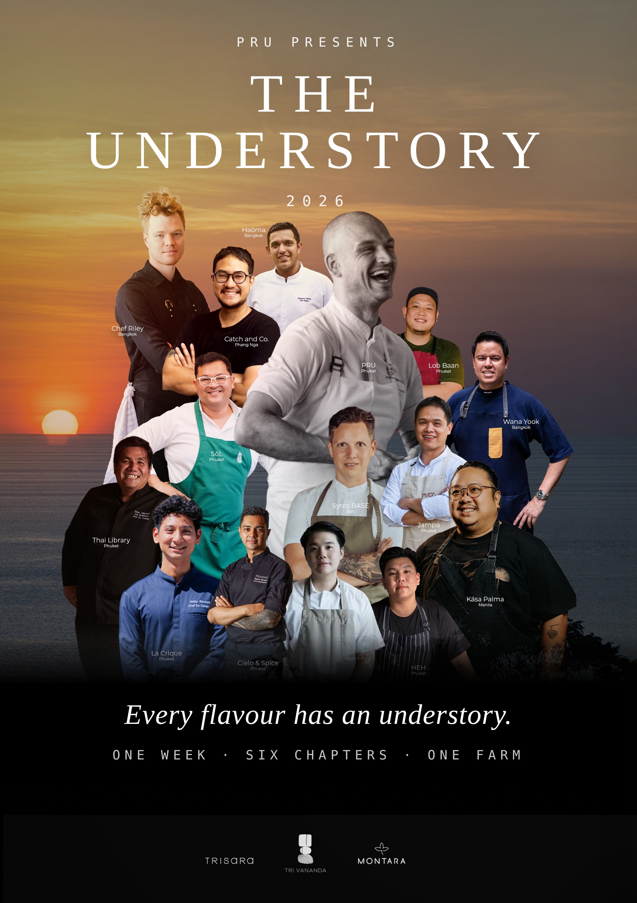

One master name for a permanent annual platform: five nights of collaborative dinners at PRU, and a farm gathering of twenty chefs and 150 guests at Tri Vananda — presented by PRU, returning every year.
Every dish begins somewhere we cannot see — in soil and rain, in the hands that planted and raised it. To taste with attention is to discover: the land and what it remembers, the people beside us, the senses we had stopped noticing, and a fuller way of being alive. Each candidate name below is a different door into this same idea.
The place · The movement · The statement
un·der·sto·ry · noun · the living layer beneath the forest canopy, where regeneration begins — and, read again, the story underneath: the hidden narrative inside every ingredient, every place, every person at the table.
Discovery as depth,
not distance.
fur·ther · adverb · beyond the point already reached. The one-word answer to an anniversary: not a look back at ten years, but the promise that the exploration has only begun.
Discovery as a direction,
not a destination.
the dis·cov·er·y feast · noun · a feast held in the name of finding — new ingredients, new people, new perspectives. The philosophy said in plain words, and “The” claiming it as the one that matters.
Discovery as an open invitation,
understood everywhere.
